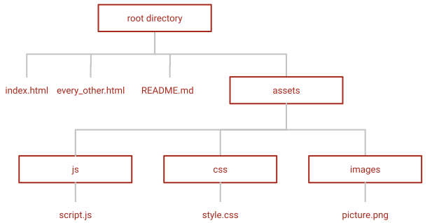

basic knowledge
File Paths & Structure
explain: file path & structure

- naming convention for file- and folder- names
- in lowercase letters
- no special characters
- no empty spaces within a file or folder name, use
_ (underscore) or
- (hyphen)
- folder and files which start with an
. are hidden
- absolute path (dose not work in "github pages")
- contains the full path from the root directory
- starting the file path with
/, start from root directory
- (e.g.:
../assets/images/picture.png leads to picture.png from any
location)
- relative path
- contains the path relative from where the file is linked from
../ moves one folder up- (e.g.:
../images/picture.png leads from style.css to picture.png
./FOLDER is telling you that you are in the directory of "FOLDER". current directory